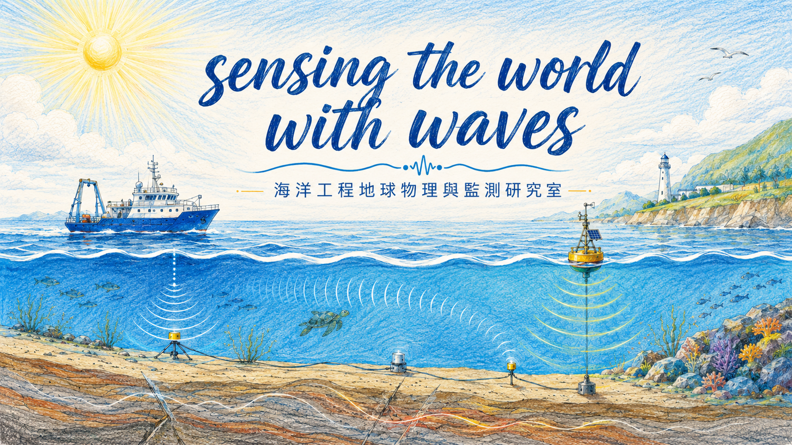

◉
SHALLOW WATER · INTERTIDAL ZONE · SEAFLOOR
探索海岸與海床
以波動感知世界
Marine Engineering Geophysics and Monitoring Laboratory
Sensing the World with WavesH-00-S01 · 首頁主視覺（淺海／潮間帶）
研究室簡介 Introduction · H-00-S02

本研究室致力於海洋工程地球物理之研究與應用，以潮間帶與淺水域為主要場域，發展與運用地球物理探查、長期監測、海洋大地工程及自主儀器研發，解析近岸與淺海地質及環境特性，支援海域工程、海岸防災與永續利用。
Our laboratory advances engineering geophysics for intertidal and shallow coastal environments through field investigation, seafloor monitoring, marine geotechnics, and in-house instrument development.
研究主題 Research Highlights · H-00-S03
 潮間帶調查Intertidal Survey
潮間帶調查Intertidal Survey 離岸能源與碳封存Offshore Energy & CCS
離岸能源與碳封存Offshore Energy & CCS技術與儀器 Technology Highlights · H-00-S04
代表性發表 Selected Publications · H-00-S05
最新消息 News · H-00-S06
加入我們 Join Us · H-00-S07
歡迎對海洋地球物理、海床調查、監測技術與海洋工程有興趣的學生及合作夥伴加入研究團隊。
LABORATORY LOCATION國立中山大學 海工館 5003 室Room 5003, Marine Engineering Building, NSYSU